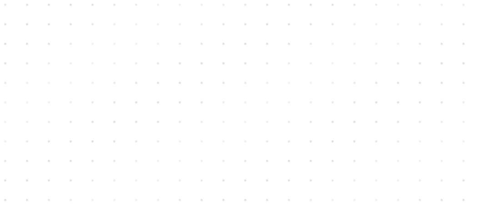
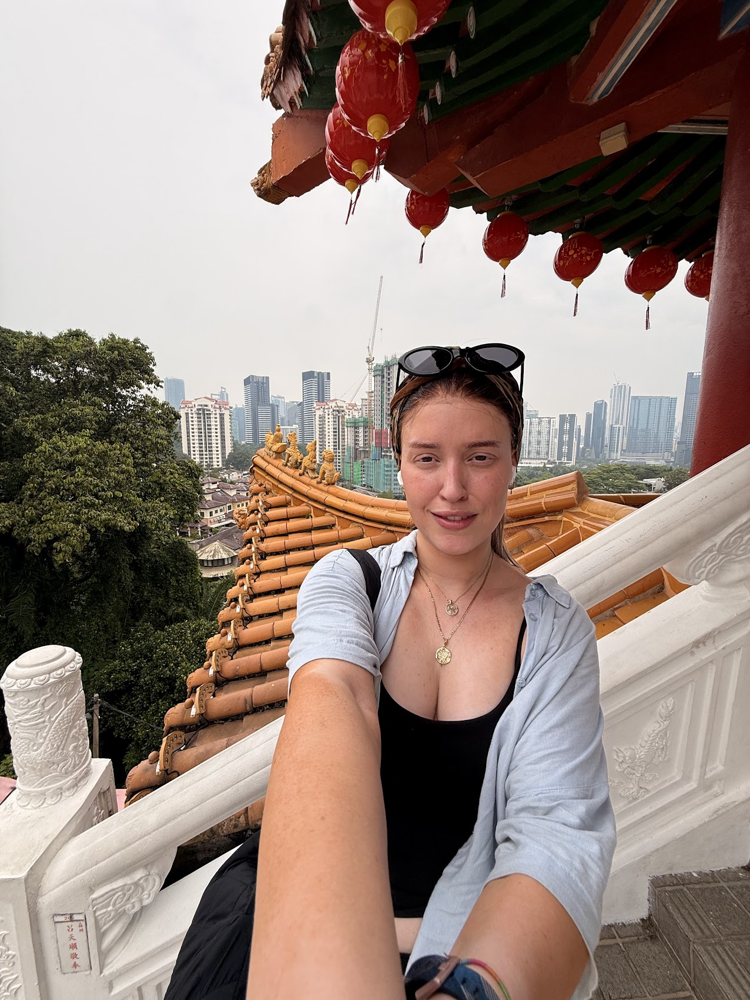
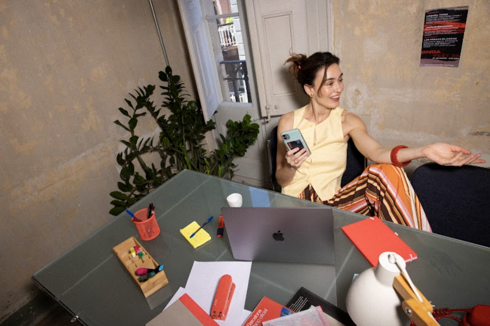
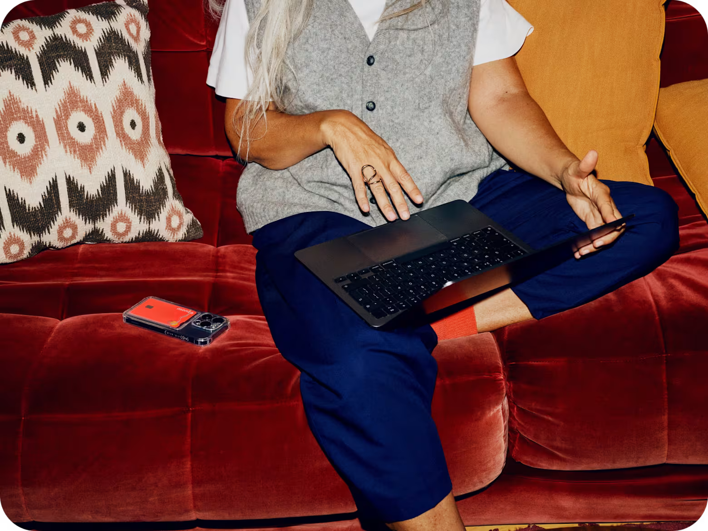
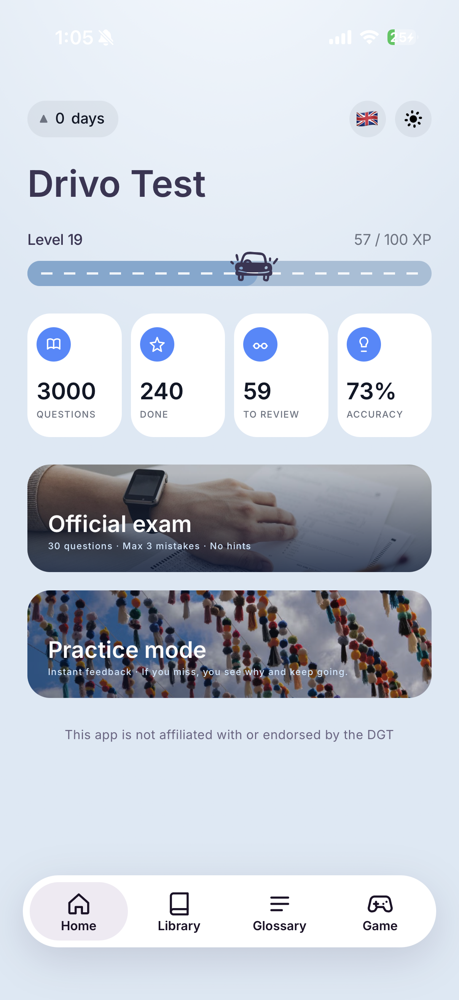
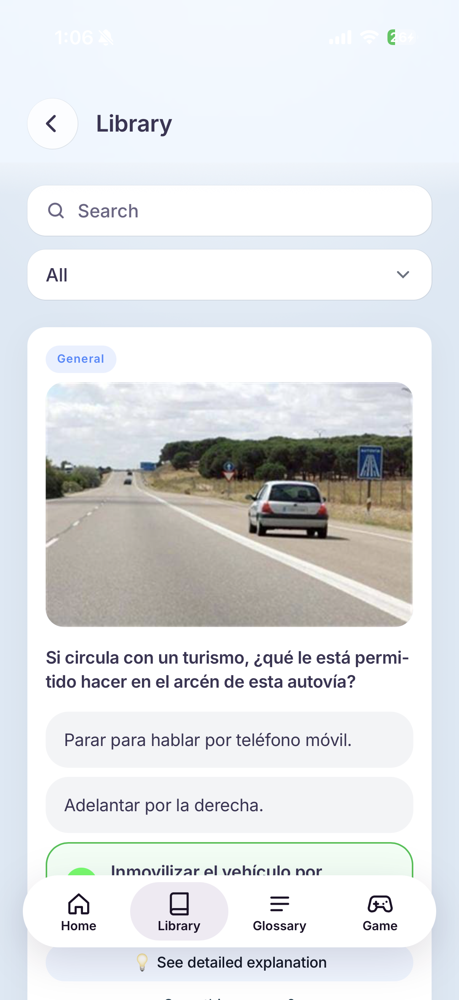

Mortgage referrals · Three experiments
01OnboardingEXPERIMENT
02Customer communicationsEXPERIMENT
03Project trackerEXPERIMENT
Team result
7.5Kreferrals
4.3Kgoal

I bring teams around the customer moment that matters, clarify trade-offs and turn broad ambition into a plan we can test.
Senior Product Designer




Mortgage referrals · Three experiments
7.5Kreferrals
4.3Kgoal
Vision · Not shipped
Target: lower operational cost · Not a measured result
A local need · A leadership decision


I explored how learners prepare for Spain’s driving theory exam through user interviews, then designed and tested an app to support their preparation.
Using AI as a development partner, I built and launched Drivo Test. I’m continuing to iterate on the experience through feedback from early users, currently friends and family.
Free on the App Store. Also available as a web app.
Designed the visual entry point to safety reports used by 500K+ clinicians across 5,000+ hospitals. The redesign reduced training time and improved report accuracy.
Created Intu’s first design system and redesigned its risk-management experience for use across company platforms.
Redesigned sign-up and platform experiences for Family Club members and non-members.
My work starts before the interface: I bring customer intent, product ambition and delivery reality into the same conversation. Then I help teams decide what to solve first—and what evidence should shape the next investment.
For first-time buyers, I mapped customer intent to in-app entry points and triggers across the home-buying journey.
For in-app recommendations, I focused the proposal on timely re-entry before investing in the full experience.
I shaped the first-time-buyer proposition around scope, success measures, engineering estimates and operational capacity.